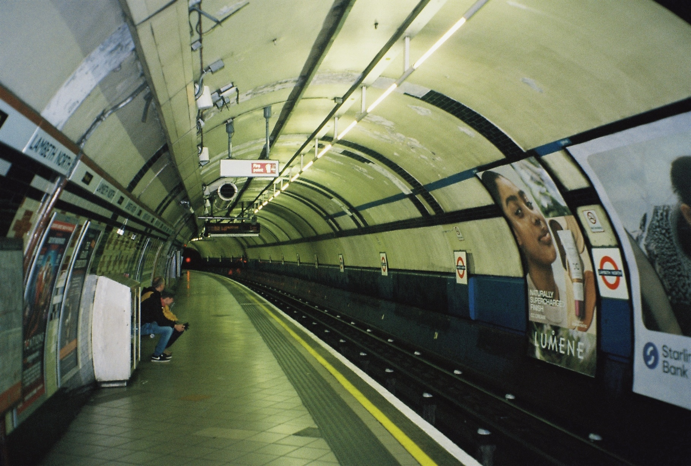
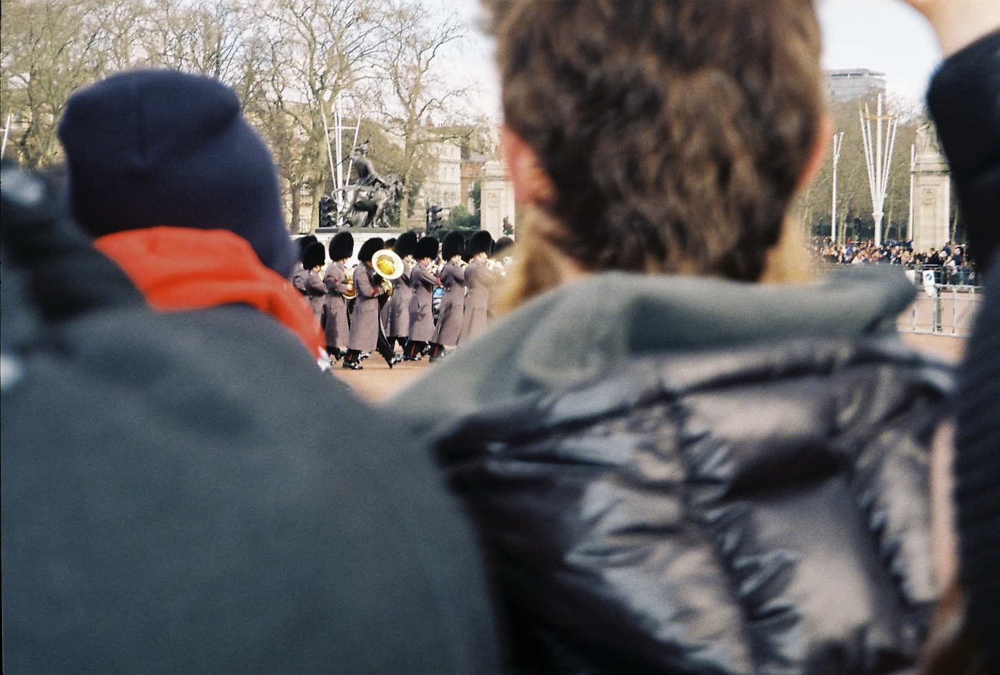
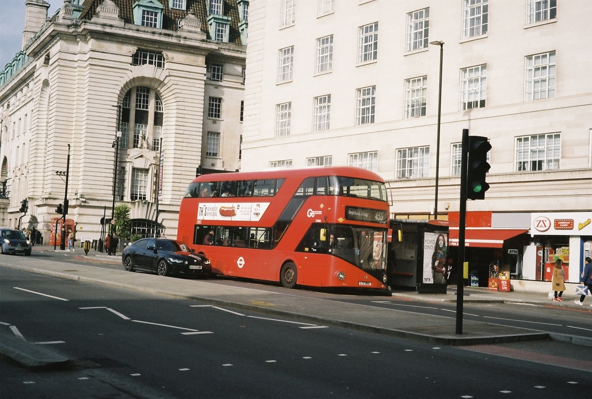

3 dagen in London
Afgelopen voorjaarsreces was ik met een vriendin voor 3 dagen naar london gegaan. Hier hebben heel veel (25km per dag..) gelopen en leuke bezienswaardigheden gezien. Hierbij heb ik heel wat foto's gemaakt met mijn analoge camera, een paar hiervan die te zien zijn op deze website.
-

Lambeth North
Lambeth North is het metrostation waar wij waren uitgestapt, na het nemen van de Elizabeth, om naar ons hotel te komen.
-

Buckingham Palace
Toen we het Buckingham Palace bezochte, waren de grenadiers aan het marcheren en maakten ze muziek.
-

Waterloo
We hadden een wandeling rond Waterloo gemaakt waar we langs de Big Ben en London Eye. Het was heel cool om deze van dichtbij te zien.
Eten
We waren naar verschillende restaurants en cafés geweest, waaronder BEAMS, The Black Penny en The Breakfast Club. Het eten was heel lekker maar niets dat je niet in Nederland zou kunnen krijgen.
CUTE Exhibition
De CUTE exhibitie was een leuke ervaring. Er was veel Hello Kitty, maar ook kunst die je niet in een alledaagse museum zou zien.
Terug?
Ik zou in de toekomst zeker terug willen naar London. Wel zou ik de volgende keer meer musea willen bezoeken.